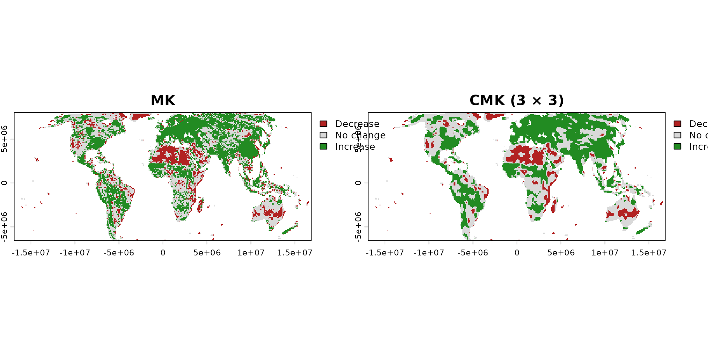

Why this matters
Apparent increases or decreases may result from random temporal fluctuations rather than genuine long-term change. Trend inference provides a formal framework for assessing whether an observed directional pattern is unlikely to have arisen by chance under the null hypothesis of no trend.
In gridded data, this question must be answered separately for every valid cell. This is usually done through pixel-wise testing, applying the same test independently to each cell’s own time series – amounting to simultaneous inference across many hypothesis tests at once, one per cell.
What trend_test() does
trend_test() applies one of four inferential methods to
every valid raster cell. Each method tests its corresponding null
hypothesis of no temporal trend against a two-sided alternative
hypothesis of an increasing or decreasing trend and returns raster
layers containing test statistics and corresponding p-values.
The default Contextual Mann-Kendall (CMK) method, introduced by Neeti and
Eastman (2011), further incorporates local spatial context. CMK is
based on the underlying logic of the Regionally Averaged Mann-Kendall
(RAMK) test developed by Douglas, Vogel
and Kroll (2000). By default, it evaluates a 3 × 3 queen
neighbourhood centred on each raster cell, comprising the focal cell and
its eight immediate neighbours, although other odd neighbourhood sizes
can be configured. Because neighbouring cells are themselves correlated
with one another, simply pooling their evidence would inflate the
apparent significance of the result; CMK’s variance estimate explicitly
corrects for this cross-correlation, so its p-values remain
properly calibrated rather than artificially small.
Basic workflow
mk <- trend_test(r, method = "MK", report = FALSE, verbose = FALSE)
cmk <- trend_test(r, method = "CMK", report = FALSE, verbose = FALSE)
mk
#> <classic Mann-Kendall result>
#> Cells tested: 15675 | significant at alpha=0.05 (uncorrected): 9181 (58.6%)
cmk
#> <Contextual Mann-Kendall (3x3) result>
#> Cells tested: 15675 | significant at alpha=0.05 (uncorrected): 9004 (57.4%)
direction_class <- function(result) {
statistic <- if ("Sm" %in% names(result$stats)) {
result$stats$Sm
} else {
result$stats$S
}
significant <- result$stats$p <= 0.05
terra::ifel(
significant & statistic < 0,
-1,
terra::ifel(significant & statistic > 0, 1, 0)
)
}
direction <- c(direction_class(mk), direction_class(cmk))
names(direction) <- c("MK", "CMK (3 × 3)")
terra::plot(
direction,
type = "classes",
breaks = c(-1.5, -0.5, 0.5, 1.5),
col = c("firebrick", "grey85", "forestgreen"),
plg = list(legend = c("Decrease", "No change", "Increase")),
nc = 2
)
Understanding the results
Both maps use the same uncorrected α = 0.05 threshold, allowing the effect of incorporating spatial context to be compared directly. The cell-wise MK result shows a fragmented salt-and-pepper pattern with numerous isolated detections. By accounting for the cross-correlation among neighbouring time series, CMK reduces these isolated responses and identifies more spatially coherent patterns of increasing and decreasing trends.
For CMK, Sm indicates trend direction, while VarSm accounts for cross-correlation among neighbouring time series. Its p-values are therefore not artificially inflated; this correction prevents spatial dependence from producing underestimated uncertainty and excessive significance (Douglas, Vogel and Kroll, 2000; Neeti and Eastman, 2011).
The returned p-values are unadjusted. Selecting and interpreting only cells with p < α, while ignoring all tests performed, creates a selective-inference problem and increases false discoveries across the raster (Gutiérrez-Hernández and García, 2025). The conventional α = 0.05 controls each individual test, not the complete set of raster cells.
Choosing the main options
| Method | Spatial context | Serial correlation | Main use |
|---|---|---|---|
CMK (Neeti &
Eastman, 2011) |
Yes | Prewhiten if detected | Spatially coherent gridded trends |
MK (Mann,
1945; Kendall, 1975) |
No | Prewhiten if detected | Classic cell-wise rank test |
MMK (Hamed &
Rao, 1998) |
No | Corrected internally | MK with temporal-autocorrelation correction |
OLS |
No | Prewhiten if detected | Parametric linear trend test |
CMK, MK and OLS require temporal preprocessing when relevant serial correlation is detected. MMK is the exception because it adjusts its variance for temporal autocorrelation internally; combining it with prewhitening would usually correct the same problem twice.
The default 3 × 3 neighbourhood follows the region described by Neeti and Eastman (2011), as implemented in TerrSet’s Kendall module. Larger odd values change the spatial scale rather than the underlying test:
trend_5 <- trend_test(r, window_size = 5L)Begin with 3 × 3 unless the process scale and raster resolution justify a broader region.
Common mistakes
- Do not describe CMK as a prewhitening procedure; it incorporates spatial context and cross-correlation but does not correct serial autocorrelation.
- Do not interpret Sm as a rate of change or change per year; it is a rank-based test statistic whose sign indicates trend direction.
- Do not combine MMK with prewhitening without a specific methodological justification; both approaches address serial autocorrelation.
- Do not treat a raster-wide analysis as a single trend test, nor
interpret raw p < α as raster-wide significance;
trend_test()performs one hypothesis test per valid raster cell, and testing many cells simultaneously creates a multiple-testing problem that requires explicit correction (see multiple-testing vignette). - Do not interpret statistical significance as evidence of a large or practically important change; significance and magnitude answer different questions.
Next steps
Use vignette("d-slope-estimation") for magnitude and
vignette("e-fdr-correction") before reporting significant
cells.
Further details
See ?trend_test for equations, assumptions, continuity
conventions, RAMK foundations, CMK validation, limitations and complete
references.
References
- Douglas, E.M., Vogel, R.M. and Kroll, C.N. (2000) Trends in Floods and Low Flows in the United States. Journal of Hydrology, 240(1-2), 90-105. https://doi.org/10.1016/S0022-1694%2800%2900336-X
- Gutiérrez-Hernández, O. and García, L.V. (2025) The Ghost of Selective Inference in Spatiotemporal Trend Analysis. Science of The Total Environment, 958, 177832. https://doi.org/10.1016/j.scitotenv.2024.177832
- Hamed, K.H. and Rao, A.R. (1998) A Modified Mann-Kendall Trend Test for Autocorrelated Data. Journal of Hydrology, 204(1-4), 182-196. https://doi.org/10.1016/S0022-1694%2897%2900125-X
- Kendall, M.G. (1975) Rank Correlation Methods (4th edn). Charles Griffin, London. No DOI available.
- Mann, H.B. (1945) Nonparametric Tests Against Trend. Econometrica, 13(3), 245-259. https://doi.org/10.2307/1907187
- Neeti, N. and Eastman, J.R. (2011) A Contextual Mann-Kendall Approach for the Assessment of Trend Significance in Image Time Series. Transactions in GIS, 15(5), 599-611. https://doi.org/10.1111/j.1467-9671.2011.01280.x